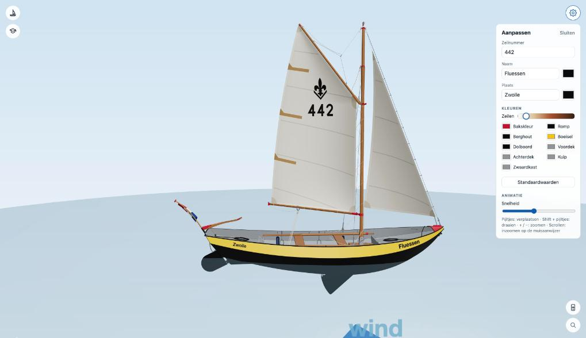
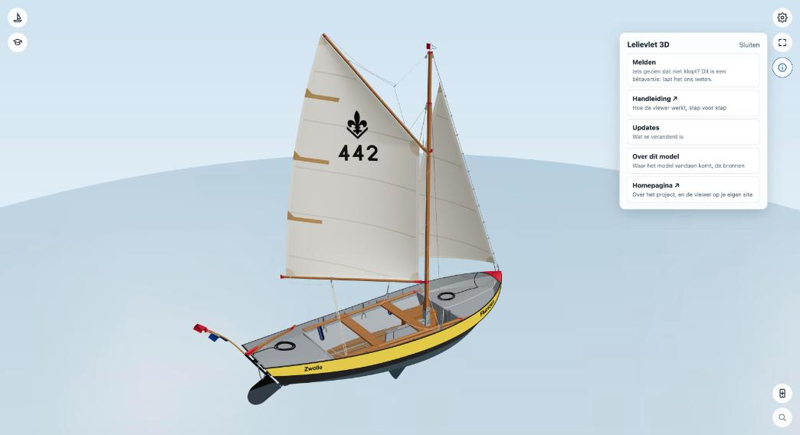

Aanpassen, app en i-menu
Je eigen boot


Het tandwiel rechtsboven opent Aanpassen:
- Zeilnummer op het grootzeil, en de naam en plaats op het boeisel, elk met een eigen letterkleur.
- Zeilen: een schuif van helder wit tot heel donker bruin. Bij donkere zeilen worden het zeilteken en het nummer wit.
- Kleuren: de bakskleur (beslag en de geschilderde banden) en een kleur per deel van de romp.
- Standaardwaarden zet alles terug.
- Snelheid van de animaties, en een geheugensteuntje voor de sneltoetsen.
Wat je aanpast, onthoudt je browser.
Als app installeren
Zet eerst je zeilnummer, naam en kleuren goed in Aanpassen: het icoon van de app wordt jouw boot, en een iPhone houdt het icoon waarmee je de app hebt toegevoegd.
Het icoon met de telefoon en de pijl rechtsonder (Installeer als app) opent een pagina die uitlegt hoe je de viewer installeert op het apparaat dat je gebruikt: met één knop in Chrome en Edge, via Deel › Zet op beginscherm in Safari op iPhone en iPad, via Archief › Voeg toe aan Dock in Safari op de Mac. Je boot gaat mee, en het icoon van de app is jouw boot met jouw zeilnummer. De app werkt ook zonder internet, op het water of op de steiger. Is er een nieuwe versie, dan biedt de app Bijwerken aan.
Het i-menu


Het rondje met de i rechtsboven opent een menu:
- Melden: zie je iets dat niet klopt, of mis je iets? Je wordt in een paar schermen door de melding geleid: is het nu te zien, waar gaat het over, wat klopt er niet. Er gaat mee wat de viewer op dat moment deed, en als je dat aangevinkt laat ook een schermafbeelding, zodat we het snel kunnen terugvinden.
- Handleiding ↗: deze handleiding, in een nieuw tabblad.
- Updates: per datum wat er veranderd is. Is er iets nieuws sinds je vorige bezoek, dan gaat dit vanzelf open en staat er Nieuw bij: in de app altijd, op een website als je je boot in Aanpassen al eens hebt aangepast.
- Over dit model: waar het model vandaan komt, de bronnen en de broncode.
- Homepagina ↗: de homepagina van het project.